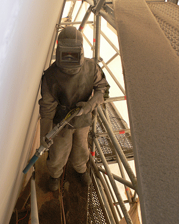

Bei Strahlarbeiten hat der Arbeitgeber den Beschäftigten die notwendige persönliche Schutzausrüstung zur Verfügung zu stellen (DGUV-Regel 100-500, Kap 2.24-3.3). Welche Schutzausrüstung erforderlich ist, ergibt sich aus dem Einsatzbereich:
Die Beschäftigten haben die Schutzausrüstung zu benutzen.